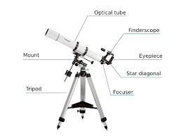

Why Stargazing?
Stargazing connects us to the universe, offering a glimpse into the vastness beyond our world.
Getting Started
- Choose the Right Location
- Seek out areas with minimal light pollution, such as dark-sky parks or rural areas.
- Utilize a light pollution map to identify optimal stargazing spots.
- Understand the Moon's Phases
- For observing faint celestial objects, aim to stargaze during a new moon or when the Moon is below the horizon.
- Start with the Naked Eye
- Begin by observing the sky without any equipment to familiarize yourself with prominent constellations and planets.
- Utilize Star Charts and Apps
- Tools like planispheres or mobile apps (e.g., SkySafari, Stellarium) can assist in identifying stars and constellations based on your location and time.
- Consider Binoculars Before a Telescope
- Binoculars are a cost-effective way to delve deeper into the night sky, revealing details like Jupiter's moons or star clusters.
- Keep an Observation Journal
- Documenting your observations can enhance your learning experience. Note the date, time, weather conditions, and celestial objects observed.
Essential Equipment
- Red Flashlight: Preserves night vision while providing necessary illumination.
- Comfortable Seating: A reclining chair or blanket can make extended observations more enjoyable.
- Warm Clothing: Nights can be chilly; dress in layers to stay comfortable.
- Insect Repellent: Protects against bugs, especially in warmer months.
- Snacks and Water: Stay hydrated and energized during your stargazing session.
Learn the Basics
Understanding constellations and celestial events enhances the stargazing experience.
Watch: Introduction to Stargazing